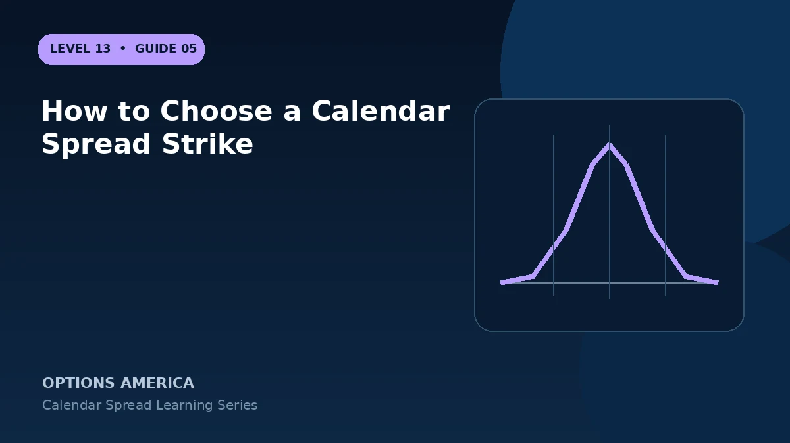

Choose an ATM, OTM or ITM calendar strike using the target price, delta, event range, liquidity and directional bias.
ATM calendars
A strike near the current price often creates a broadly neutral starting position with strong time-value concentration. It is appropriate only when the target is also near the current market.
OTM calendars
Placing a call calendar above price expresses a bullish target; placing a put calendar below price can express a bearish target. The underlying must move toward the strike within the planned window.
ITM calendars
An ITM strike can carry larger intrinsic values and assignment exposure in the short option. Compare extrinsic value and delta rather than assuming moneyness alone improves probability.
Liquidity and events
Both expirations must have viable markets at the same strike. Review earnings, dividends and strike-specific IV because an attractive target with poor execution is not an attractive trade.
A practical example
With stock at $98, compare 95, 100 and 105 call calendars. They represent different targets and starting deltas even when their expiration dates match.
This simplified example uses selected price, time and volatility assumptions; live results will differ. Live option prices also reflect the underlying price, time decay, rates, dividends, liquidity and transaction costs. Greeks are theoretical estimates, not guarantees.
Frequently asked questions
Must a calendar be ATM?
No.
Can strike choice make it directional?
Yes. An OTM target creates directional exposure.
Why inspect extrinsic value?
Calendar economics depend on the relative time value sold and bought.
Continue the Calendar Spreads cluster
Explore related guides: How to Choose Calendar Spread Expirations · Double Calendar Spread Explained · When to Close a Calendar Spread. For a structured sequence, use the free Level 13 – Calendar Spreads course.
Options involve risk and are not suitable for every investor. This material is educational and is not investment, tax or legal advice. Greeks are theoretical estimates, and contract terms and broker requirements can vary.